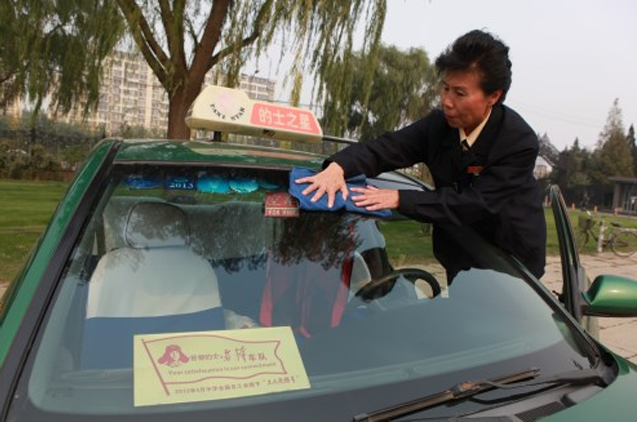
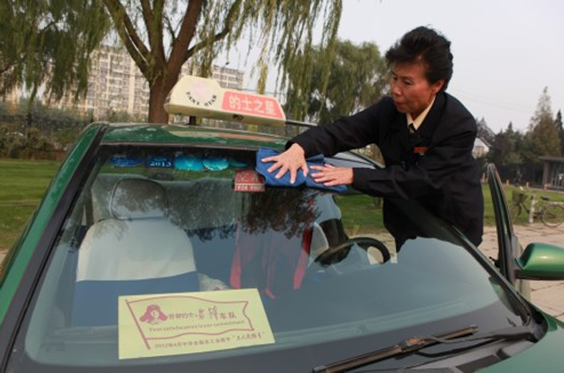

Wang Fengjin, female, born in May 1958, the capital's Shi Leifeng team
On October 15, 2007, Wang Fengjin listened to the report of the 17th National Congress of the Communist Party of China and saw that the motherland was growing prosperously. The idea of setting up a Leifeng team was born in the heart and was supported by Yinshan Rental Company. After Wang Fengjin's intense preparations, he absorbed the unit "Taxi Star" and party members. The capital's Shi Leifeng team was formally established on the morning of December 29, 2007, and Wang Fengjin was the captain. She insisted on self-study in foreign languages and mastered the basic exchanges of six national languages: English, Korean, Japanese, Thai, German, and Vietnamese. Her guests are Chinese, foreigners, Beijingers, and foreigners. No matter who they are, she treats guests like family members.
[details]
Zhang Xiaoyan is the chief physician of the dermatology department of the China-Japan Friendship Hospital.
Professor of Peking University Medical School, doctoral tutor, the 14th Beijing Municipality The Grand Representative is the head and promoter of the National Community Medical Service Volunteer Group. In 2015, She launched an initiative at the Social Work and Volunteer Service Salon of the China Volunteers Association. Call for the establishment of a national high-level, full-disciplinary medical expert volunteer service team. Obligation to train grassroots doctors in the underdeveloped areas and send doctors to the countryside. In her shadow Under the ringing and inspiration, the “National Community Medical Service Volunteer Group” was quickly established and developed into It is the largest national medical institution with the highest level of service and the highest number of service organizations. Volunteer service community.
[details]

Liao Lichun is currently the vice president of Beijing Institute of Chonggao, Beijing Chentuo Lianxin Technology Development Co., Ltd. The former chairman of the responsible company and a member of the Beijing Political Consultative Conference. Since 2005, he has participated in international for 6 consecutive years. The volunteering activities of the Engebei base in Inner Mongolia, founded by friends, saw the countries from Japan and South Korea. When the friends came to China to volunteer to plant trees, he gave birth to a volunteer team that formed the Chinese themselves. The idea of exhibiting environmental greening activities. On the basis of many visits to major deserts and sandy areas, from 20 Since 11 years, Liao Lichun has successively worked in Shanshankou, Xilin Gol League, Inner Mongolia, and Zhangjiakou, Hebei Province. Zhangbei County established an environmental protection and greening base and embarked on the establishment of the Chinese environmental protection and greening team. The journey of planting trees in the sand.
In order to evoke the volunteer spirit of more people, Liao Lichun led the volunteer team to plant trees and green sand. At the same time, by writing a CPPCC proposal, the Hunshandac Greening Volunteer website was opened. More than 10 universities, such as Peking University and the University of International Business and Economics, give speeches and other forms to promote traditional culture. Advocate volunteerism. Driven by Liao Lichun and his team, Beijing Normal University, Foreign Trade and Economics Xuezhong, Zhongguancun Haidian Park, went to the base to carry out greening activities. More volunteers responded to the call, Sign up for the greening activities through the website. In the past six years, there have been 215 batches and more than 8,000 people. The volunteers participated in the activity and planted more than 1.3 million trees. In the activity, Liao Lichun personally, gram Taking business management, social activities and other issues, using the company's own funds, has invested 200 More than 0 million yuan, used for infrastructure construction of the base, purchase of saplings, car rental for volunteers Use, room and board expenses, etc. He went to the sand to plant trees together with the volunteer team and became a volunteer. The "King of the Kings" in the team.
[details]